MAXDISTCOLOR Examples
The function MAXDISTCOLOR generates an RGB colormap of maximally distinct colors. Its optional input arguments are explained in this illustrated document.
Although it is tempting to create colors which are extremely distinct, such sets of colors are garish and unattractive: restricting the lightness and chroma ranges provides for much more pleasant sets of distinct colors See the last section "Interactive Tool" for an example, and be prepared to spend some time experimenting to find the right colorspace and parameter values for your own needs and aesthetics.
Printing also requires the lightness and chroma ranges to be restricted (e.g. based on the ICC profile for the specific printing device).
Warning: the task grows exponentially with the number of requested colors and the gamut size. Some option permutations are not tractable.
Contents
- Getting Started
- Uniform Colorspace: OSA-UCS
- Uniform Colorspace: CAM02-UCS
- Specify Included Colors
- Specify Excluded Colors
- Limit Lightness Range
- Limit Chroma Range
- Specify RGB Bit Depth
- Sort the Colormap
- Bonus: Color Names
- Sort Path Open or Closed
- Visualize Color Distances
- Algorithm Status Information
- Bonus: Interactive Tool
Getting Started
The simplest usage is to call MAXDISTCOLOR with the number of colors and the SRGB_TO_CIELAB colorspace conversion function (included within MAXDISTCOLOR.ZIP ) which converts from sRGB to the slightly distorted but ever-popular CIELAB colorspace):
N = 9; rgb = maxdistcolor(N,@sRGB_to_CIELab) X = linspace(0,10,1000); Y = bsxfun(@(x,n)n*sin(x+2*n*pi/N), X(:), 1:N); axes('ColorOrder',rgb, 'NextPlot','replacechildren', 'XTick',[],'YTick',[]) plot(X,Y, 'linewidth',5)
rgb =
0 0 1.0000
0 1.0000 0
1.0000 0 0
1.0000 0 0.5873
1.0000 0.8976 0
0.5714 0.5354 1.0000
0 0.6220 0.3492
0.4444 0.2677 0
0 0 0.1587
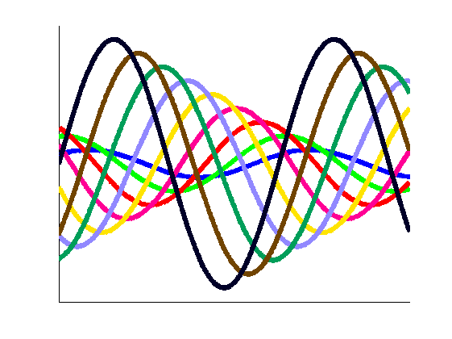 Uniform Colorspace: OSA-UCS
The color distinctiveness depends significantly on the quality of the colorspace used: it is strongly recommended to use a uniform colorspace, such as OSA-UCS, for which a conversion function is also included within MAXDISTCOLOR.ZIP.
Note that the OSA-UCS default output is not suitable for MAXDISTCOLOR, the function must be called with its 2nd and 3rd inputs set to TRUE:
fun = @(m)sRGB_to_OSAUCS(m,true,true); rgb = maxdistcolor(N,fun) axes('ColorOrder',rgb, 'NextPlot','replacechildren', 'XTick',[],'YTick',[]) plot(X,Y, 'linewidth',5)
rgb =
1.0000 0 1.0000
1.0000 0.5354 0
0 0 0.2698
1.0000 0 0.3968
0 0 1.0000
0.5873 0.4409 0.8730
0.3651 0 0.0159
0 1.0000 0
0.0317 0.5433 0.3175
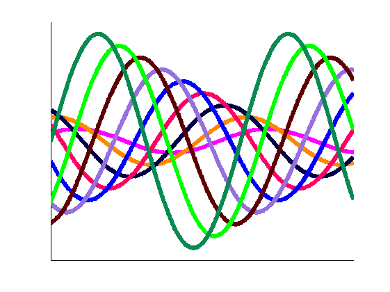 Uniform Colorspace: CAM02-UCS
Other good uniform colorspaces include CAM02-UCS or CAM02-LCD, both of which are derived from the color appearance model CIECAM02. You can download my implementation of CIECAM02 and use the function SRGB_TO_CAM02UCS and either select 'LCD' space (for very dissimilar colors) or use the default 'UCS' (for closer colors):
fun = @sRGB_to_CAM02UCS; % default = UCS rgb = maxdistcolor(N,fun) axes('ColorOrder',rgb, 'NextPlot','replacechildren', 'XTick',[],'YTick',[]) plot(X,Y, 'linewidth',5)
rgb =
0.6508 0 0.0159
0 0.3307 1.0000
0 0.4252 0
1.0000 0.3228 1.0000
0.3333 0 0.3810
0 1.0000 0
0 0.7244 0.7302
0.8254 0.5748 0
0 0.0236 0
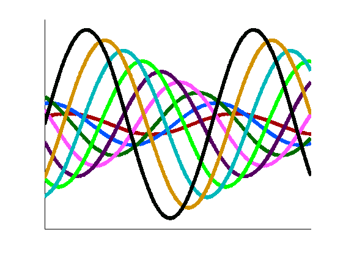 Specify Included Colors
Option inc includes color/s in the output colormap: for example it can be used to find a set of distinct colors that includes a corporate or academic colorscheme. By default no specific colors are included.
Note that both options inc and exc can be provided as:
- floating point colormaps (with all values 0<=rgb<=1).
- integer colormaps (with each channel's values 0<=rgb<=#bits.^2-1).
rgb = maxdistcolor(N,fun, 'inc',[1,0,0;0,1,0]) % Include red and green. axes('ColorOrder',rgb, 'NextPlot','replacechildren','XTick',[],'YTick',[]) plot(X,Y, 'linewidth',5)
rgb =
1.0000 0 0
0 1.0000 0
1.0000 0.3622 1.0000
0 0.3858 0.3651
0.4762 0 0.3016
0.3810 0.7087 1.0000
0.6190 0.5276 0.0476
0.3810 0 0.9524
0 0 0
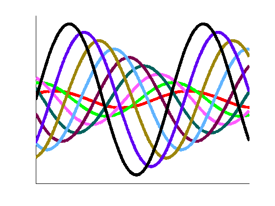 Specify Excluded Colors
Option exc excludes color/s from the output colormap. This is useful for specifying the background color of the plot (thus ensuring that the plotted colors are distinguishable from the background color), or for adding new distinct data to an already existing plot. By default the color white is excluded (i.e. exc=[1,1,1]), so that the output colors are visible on the white axes background or when printed on white paper.
rgb = maxdistcolor(N,fun, 'exc',[0,0,0]) % Exclude black (e.g. background). axes('ColorOrder',rgb, 'NextPlot','replacechildren', 'XTick',[],'YTick',[], 'Color',[0,0,0]) plot(X,Y, 'linewidth',5) set(gcf,'InvertHardcopy','off', 'Color','white')
rgb =
1.0000 0.6929 0
1.0000 0.2126 1.0000
0.0794 0.5827 0.6508
0.8730 0 0
0 0 0.7778
0.9206 0.8898 0.9841
0.3651 0.3307 0
0 1.0000 0.5873
0.4444 0 0.3810
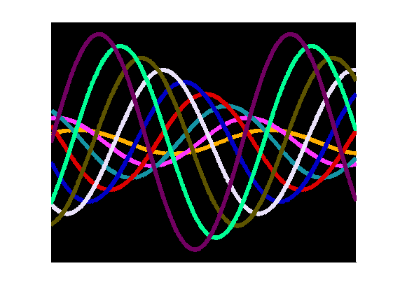 Limit Lightness Range
To create attractive sets of colors, or to match document requirements, it can be useful to limit the lightness range of the output colors. The output lightness range is controlled using options Lmin and Lmax. Note that the lightness limits are scaled so that 0==black and 1==white.
clf('reset') [rgb,ucs] = maxdistcolor(N,fun, 'Lmin',0.4, 'Lmax',0.6); scatter3(ucs(:,3),ucs(:,2),ucs(:,1), 256, rgb, 'filled') % Plot outline of RGB cube: M = 23; [X,Y,Z] = ndgrid(linspace(0,1,M),0:1,0:1); mat = fun([X(:),Y(:),Z(:);Y(:),Z(:),X(:);Z(:),X(:),Y(:)]); J = reshape(mat(:,1),M,[]); a = reshape(mat(:,2),M,[]); b = reshape(mat(:,3),M,[]); line(b,a,J,'Color','k') axis('equal') grid('on') view(-34,7) % Add Labels: title('Colors with Limited Lightness, Inside RGB Cube') xlabel('Hue Dim.2 (b'')') ylabel('Hue Dim.1 (a'')') zlabel('Lightness (J'')')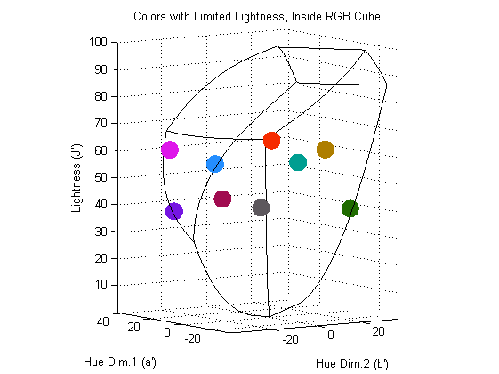
Limit Chroma Range
To create attractive sets of colors or to match document requirements it can be useful to limit the chroma range of the output colors. The output chroma range is controlled using options Cmin and Cmax. Note that the chroma limits are scaled so that 1==max(gamut chroma).
[rgb,ucs] = maxdistcolor(N,fun, 'Cmin',0.5, 'Cmax',0.6); scatter3(ucs(:,3),ucs(:,2),ucs(:,1), 256, rgb, 'filled') % Plot outline of RGB cube: line(b,a,J,'Color','k') axis('equal') grid('on') view(0,90) % Add Labels: title('Colors with Limited Chroma, Inside RGB Cube') xlabel('Hue Dim.2 (b'')') ylabel('Hue Dim.1 (a'')') zlabel('Lightness (J'')')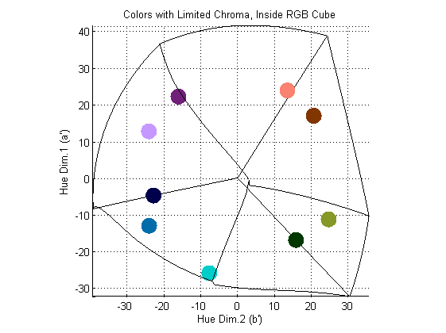
Specify RGB Bit Depth
By default MAXDISTCOLOR creates the RGB gamut using [6,7,6] bits for the red, green, and blue channels. The bit options can be used to:
- increase the bits per channel to give a bigger choice of colors (and make the greedy algorithm slower and more robust). Using 8 bits per channel (TrueColor) requires 64 bit MATLAB and more than 8 GB of RAM.
- decrease the bits per channel to speed up the function. Note that for small number of bits the greedy algorithm can fail to identify the maximally distinct colors.
Specifying 2 bits per channel defines an RGB gamut with 64 colors, so requesting 64 colors will return every color from that RGB gamut:
clf('reset') rgb = maxdistcolor(64,@sRGB_to_CIELab, 'bitR',2,'bitG',2,'bitB',2, 'exc',[]); scatter3(rgb(:,3),rgb(:,2),rgb(:,1), 256, rgb, 'filled') grid('on') view(40,32)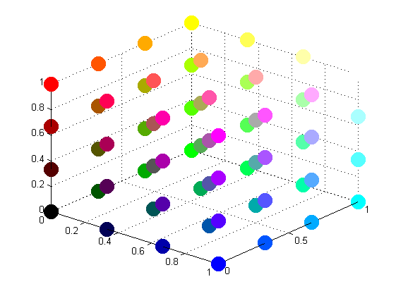
Sort the Colormap
The greedy algorithm returns an undefined, non-random color order. Some color orders that might be more attractive or useful can be selected using the sort option: see the m-file help for the complete list of sort orders. Note that some orders use an algorithm that checks all permutations: those orders will only work for nine or fewer colors.
clf('reset') rgb = maxdistcolor(N,fun, 'sort','hue', 'exc',[0,0,0;1,1,1]); image(permute(rgb,[1,3,2])) set(gca,'XTick',[],'YTick',1:N,'YDir','normal') title('Sorted Colors') ylabel('Colormap Index')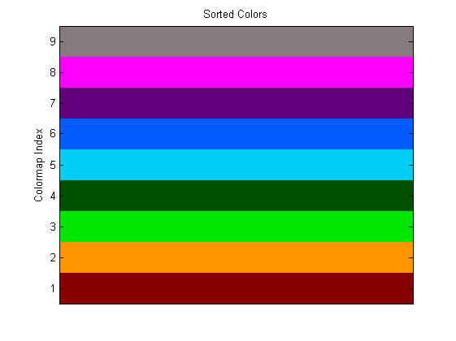
Bonus: Color Names
Sometimes it can be useful to give colors names, e.g. when providing a list of colors for a user to select from, or for defining HTML colors. One easy way to find a color name is to download my FEX submission COLORNAMES:
text(ones(1,N), 1:N, colornames('CSS',rgb),... 'HorizontalAlignment','center', 'BackgroundColor','white') title('Colors with Color Names') ylabel('Colormap Index')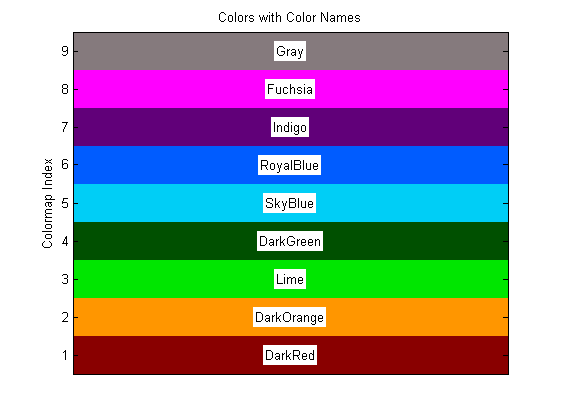
Sort Path Open or Closed
For sort types 'maxmin', 'minmax', 'longest', and 'shortest' the default sort algorithm treats the end colors as being disconnected from each other, forming an 'open' path. Selecting the path option as 'closed' treats the end colors as being adjacent to each other, forming one continuous loop (e.g. for data using modulo arithmetic):
clf('reset') N = 6; txt = cellstr(num2str((1:N).')); opt = {'Lmin',0.4, 'Lmax',0.5, 'bitR',7,'bitG',8,'bitB',7}; % Path Closed: [~,ucs] = maxdistcolor(N,fun, 'sort','shortest', 'path','closed', opt{:}); idx = [1:N,1]; % closed loop plot3(ucs(idx,3)-1,ucs(idx,2),ucs(idx,1)+1,'-b', 'linewidth',2) text(ucs(:,3),ucs(:,2),ucs(:,1)-7, txt, 'Color','b', 'HorizontalAlignment','center') % Path Open: [rgb,ucs] = maxdistcolor(N,fun, 'sort','shortest', 'path','open', opt{:}); hold('on') idx = 1:N; % open loop plot3(ucs(idx,3)+1,ucs(idx,2),ucs(idx,1)-1,'-r', 'linewidth',2) text(ucs(:,3),ucs(:,2),ucs(:,1)+7, txt, 'Color','r', 'HorizontalAlignment','center') % Legend and Colors: legend({'Closed','Open'}, 'Location','NorthWest') scatter3(ucs(:,3),ucs(:,2),ucs(:,1),512,rgb,'filled') grid('on') axis('equal') pause(1)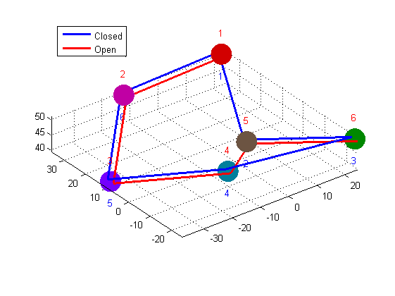
Visualize Color Distances
It is easy to plot the distances between the returned color nodes, providing a visual confirmation that the colors are maximally distinct. The vertical gap between the mono-colored points (along the bottom) and the bi-colored points indicates the closest distance of the colors in the colorspace (this distance is maximized by the repeated greedy algorithm):
clf('reset') for k = 1:N dst = sqrt(sum(bsxfun(@minus,ucs,ucs(k,:)).^2,2)); scatter(1:N, dst, 123, rgb,... 'MarkerFaceColor',rgb(k,:), 'LineWidth',2.8, 'Marker','o') hold on end title('Euclidean Distances in CAM02 Colorspace') ylabel('Euclidean Distance') xlabel('Colormap Index') pause(1)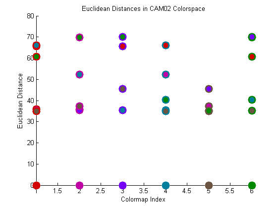
Algorithm Status Information
An easy way to obtain the (maximized) minimum distance between the colors is to return the third output, which is a scalar structure of information about the completed greedy algorithm. The three distances included are:
| Fieldname | Value |
|---|---|
minDistOutput | minimum distance between all output colors |
minDistAndExc | minimum distance including any exc colors |
minDistNotInc | minimum distance excluding any inc colors |
[~,~,status] = maxdistcolor(N,fun)
status =
seconds: 2.6880
options: [1x1 struct]
gamutSize: 524288
iterations: 37
minDistOutput: 50.0321
minDistAndExc: 49.9691
minDistNotInc: 50.0321
Bonus: Interactive Tool
An easy way to vary the optional arguments and see how they affect the output colormap is to use the included function MAXDISTCOLOR_VIEW. Simply adjust the sliders, menu options, and the included/excluded colors to create new sets of colors. For example, many attractive color sets can be found by limiting the lightness and chroma to quite tight ranges:
maxdistcolor_view(7,fun, 'Cmin',0.2,'Cmax',0.4, 'Lmin',0.7,'Lmax',0.8, 'sort','lightness')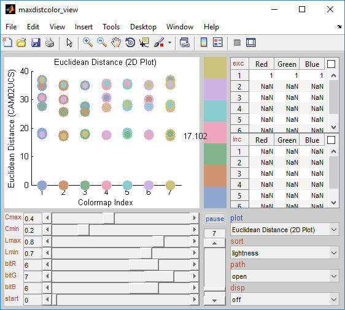